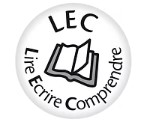

🎒 Mon Espace d'Apprentissage Autonome

📝 Section Grammaire
Les Articles
Fiche Spéciale 12-05
Niveau A1
Niveau A2
Niveau B1
Niveau B2
LES DEMONSTRATIFS déterminants et pronoms
CE CET CETTE CES
CELUI CELLE CEUX CELLES (-ci -là) CECI CELA
Les interrogatifs
Qui, Où, Quand, Pourquoi, Comment, Combien, que, quel(s), quelle(s)
📄 Qui, Où, Quand, Pourquoi, Comment, Combien Feuille 1
📄 Qui, Où, Quand, Pourquoi, Comment, Combien Feuille 2
📄 Qu', Que, Quel, Quels, Quelle, Quelles Feuille 1
📄 Qu', Que, Quel, Quels, Quelle, Quelles Feuille 2
Conjugaison
Le Futur Simple
L Imparfait
Le Passé Composé
Être, Avoir, Faire, Aller
📘 La Leçon
✍️ Entraînement
📖 L'histoire de Youssef
10-verbes-les-plus-utilises
Le présent
🎨 Section Vocabulaire & Jeux
Jeux du Pendu
🎯 Trouver les mots (Les Vêtements)
Vocabulaire Tests à trous
📊 Évaluations & Informations
📈 Test de niveaux
📚 Bon à savoir